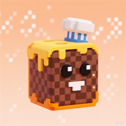

牛肉饼
Noob-Approved Beef Dish · 极客初中生 · 乌鲁木齐
whoami
爱折腾 Windows、Minecraft 模组和复古计算。喜欢把老东西修好，把新东西拆开。 用 DeepSeek API 在 OpenClaw 里跑着一个叫 铁爪 的 AI 助手，一起写点小工具。
projects
| bat2com | 把 DOS DEBUG 脚本转成能直接跑的 .COM —— PowerShell + cmd，零依赖。 GitHub |
| 铁爪 | 跑在本地的 AI 助手：记忆、梦境、日记，都由文件撑着。 |
skills
- Windows 折腾：注册表、计划任务、驱动、性能和自启治理
- PowerShell / Python 自动化，偶尔写点 cmd 批处理
- HTML / CSS / JS 小玩意
- 破解不了的，就汉化它
now
- 初三在读，周末在线
- 正在学怎么写别人也看得懂的文档
- 折腾复古 DOS 和 DOSBox
links
这里没有追踪、没有框架、没有构建步骤。
你可以按 F12 看完这页的所有源码。